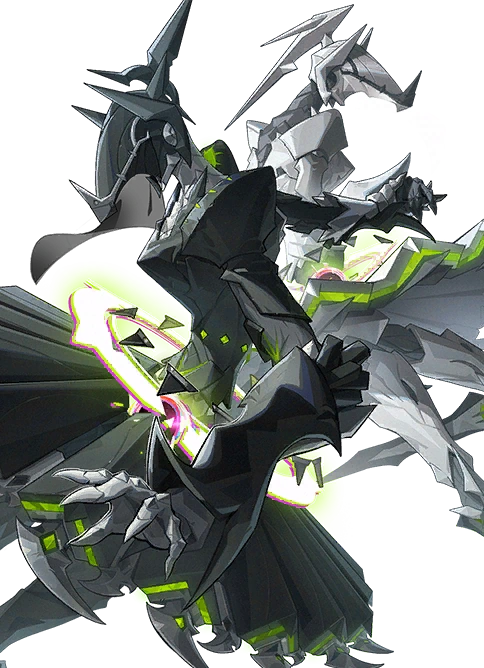
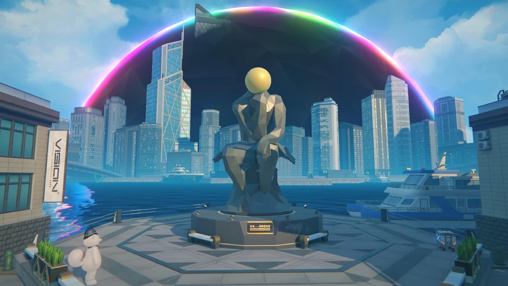
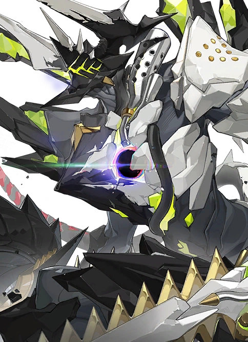
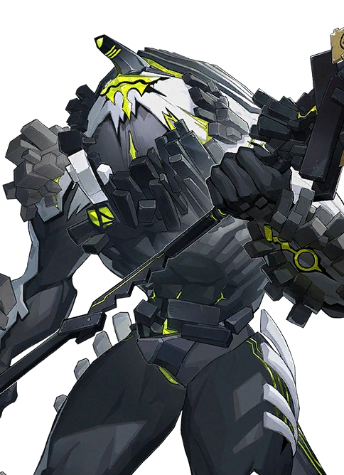

Marionetes Gemêas

As Marionetes Gemêas são um grupo de etéreos mutantes encontrados durante o combate. Podem ser desafiadas no modo de jogo "Caçada Notável: Marionetes Gemêas"
Os Hollows (também conhecidos como Esferas Negras) são desastres supernaturais em Zenless Zone Zero. Eles são dimensões escuras, a parte do mundo real que aparecem do absoluto nada, engolindo porções grandes do mundo físico. Pessoas e objetos presos dentro dos Hollows podem sofrer corrupções fatais de Éter, que é a energia que as Esferas Negras produzem, e essa corrupção por Éter cria monstros conhecidos como etéreos, que vivem apenas dentro dos Hollows.


As Marionetes Gemêas são um grupo de etéreos mutantes encontrados durante o combate. Podem ser desafiadas no modo de jogo "Caçada Notável: Marionetes Gemêas"

O Corrompido - Pompey é um mutante etéreo encontrado durante o combate. Pode ser desafiado no modo de jogo "Caçada Notável: Corrompido - Pompey"

O Carniceiro do Beco é um mutante de éter encontrado durante o capítulo 1 da história. Pode ser desafiado no modo de jogo "Caçada Notável: Carniceiro do Beco"